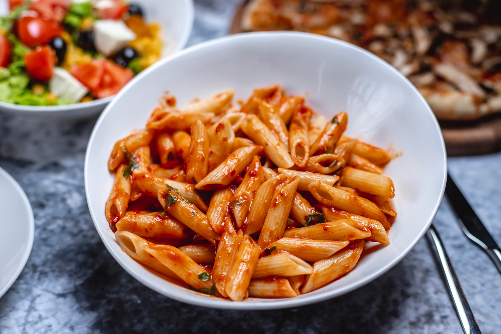

Home
Penne Alla Vodka

Image by stockking on Magnific
Description
If you are looking to make a delicious pasta dish for yourself or others,
there is no better thing for you to cook than Penne Alla Vodka! For how
delicous your meal will be, Penne Vodka is suprisingly simple to cook,
allowing for a stress-free meal. Not only that, but this dish works great
with others as a creamy, carb-rich pasta might not be the best starter for
everyone. However, when paired with meat (usually chicken) and other sides
such as a salad, they can combine for the perfect meal! So what are you waiting
for? Look below to start preparing ingredients and the steps to make this delicious
meal!
Ingredients
- 8 ounces of penne
- 1 tablespoon olive oil
- 2 tablespoons butter
- 1/2 small onion - chopped finely
- 1 clove garlic - minced
- 1/4 cup vodka
- 1/4 cup tomato paste
- 3/4 cup heavy/whipping cream
- Salt & pepper
- Fresh Basil - sliced thin
- Freshly grated parmesan cheese
Steps
- Boil a generously salted pot of water for the penne and cook it al dente
according to package directions.
- Meanwhile, add the oil and butter to a skillet over medium heat. Sauté the
onion for about 5 minutes or until softened (ok if it lightly browns).
- Stir in the garlic and cook for about 30 seconds.
- Add the vodka and let the sauce bubble for 30 seconds or so.
- Stir in the tomato paste until you've got a smooth mixture.
- Stir in the cream, and reduce heat to medium-low. Let the sauce warm through.
I find this sauce thickens up very quickly (within a couple minutes), but
feel free to cook it a little longer to thicken it up even more.
- Season with salt & pepper as needed. Stir in the fresh basil if using. Toss
with the drained pasta (if needed, thin the sauce out a bit with a splash of
hot pasta water prior to draining it). Serve with freshly grated parmesan
cheese if desired.
Credit
Ingredients and steps from Salt and Lavender.